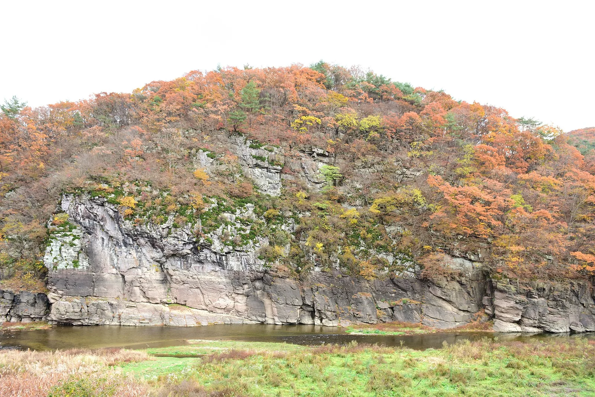
▲ 가을 단풍이 내려앉은 대곡천변 반구대 암각화 일대의 절벽. 암각화는 이 절벽 아래쪽 바위면에 새겨져 있다 사진=Wikimedia Commons (Korea Heritage Service, CC BY-SA 4.0)
1. 왜 지금 반구천 암각화인가
울산 울주군 대곡천(반구천) 물길을 따라 약 3km 구간에 흩어진 바위그림이 2025년 7월 12일 '반구천의 암각화(Petroglyphs along the Bangucheon Stream)'라는 이름으로 유네스코 세계유산 목록에 올랐다. 프랑스 파리에서 열린 제47차 세계유산위원회(7월 6~16일)가 현지시간 7월 12일 오전 등재를 결정했고(결정문 47 COM 8B.20), 2010년 잠정목록에 오른 지 15년 만이다. 일부 백과사전에는 7월 14일로 적혀 있지만, 국가유산청 보도자료와 유네스코 결정 기준 등재일은 파리 현지시간 7월 12일이다(한국시간으로도 같은 날 저녁). 이 등재로 우리나라의 세계유산은 17건(문화유산 15건, 자연유산 2건)이 됐다. 세계유산은 국보 「울주 대곡리 반구대 암각화」와 국보 「울주 천전리 명문과 암각화」 두 곳을 하나로 묶은 단일 유산이다.
등재 이후 방문객은 눈에 띄게 늘었다. 울산암각화박물관 방문객은 지난해 11만 5,000여 명으로 전년보다 42.6% 늘었고, 외국인 방문객도 1,051명으로 역대 최다를 기록했다. 반면 올해 1~6월 방문객은 전년 같은 기간보다 12.4% 줄어 '반짝 효과'라는 지적도 나온다. 대신 그사이 관람 환경은 꽤 달라졌다. 주차장과 유적지를 잇는 무료 순환버스가 생겼고, 관람 지점에는 AI·XR 망원경이 들어섰다. 단풍이 드는 10~11월은 계곡 풍경과 함께 보기 좋은 시기다.
2. 무엇을 보러 가나 — 고래 사냥을 새긴 바위, 기하학 무늬의 바위
반구대 암각화는 1971년 12월 25일 동국대학교 조사단이 처음 찾아냈다. 울산암각화박물관 자료에 따르면 그림이 새겨진 중심 바위면은 높이 약 4.5m, 너비 약 8m이며, 여기에 동물 200점, 사람 16점, 도구 22점, 알 수 없는 것 74점 등 모두 312점의 그림이 확인된다. 가장 유명한 것은 고래다. 박물관 자료 기준으로 고래 그림만 56점이고, 숨구멍·머리·몸통·가슴지느러미 모양으로 구분되는 종류가 최소 7종이다. 현장 안내판은 북방긴수염고래·귀신고래·혹등고래 등을 예로 들고, 배를 탄 사람들이 고래를 사냥하고 해체하는 과정까지 새겨져 있다고 설명한다. 신석기시대에 새긴 것으로 추정되며, 한국관광공사는 이를 '인류 최초의 포경 기록'이자 '한반도 최초의 미술작품'으로 소개한다. 고래·물개·거북 같은 바다 동물과 사슴·호랑이 같은 뭍짐승이 한 바위에 함께 있는 것이 특징이다.
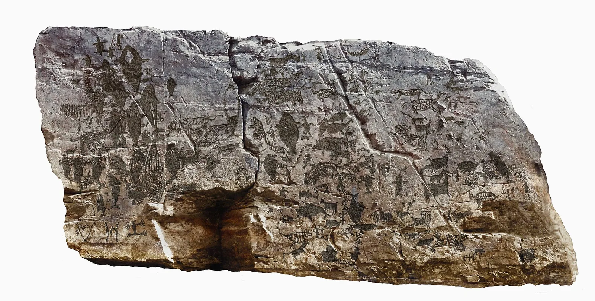
▲ 반구대 암각화의 중심 바위면. 고래와 사슴, 사람, 배 모양이 한 면에 겹쳐 새겨져 있다 사진=Wikimedia Commons (Ulsan Petroglyph Museum, CC BY-SA 3.0)
상류 쪽 천전리 암각화(국가유산 공식 명칭 '울주 천전리 명문과 암각화')는 성격이 다르다. 비스듬히 기운 너른 바위면에 마름모·동심원 같은 기하학 무늬와 동물 그림, 그리고 신라시대 사람들이 남긴 글씨(명문)가 함께 새겨져 있다. 1970년 발견된 이 바위에는 신석기·청동기·신라시대에 걸쳐 새긴 그림과 글씨가 모두 625점(동물상 52, 인물상 24, 기하문 81, 문자 127점 등) 확인된다. 한국관광공사 대한민국 구석구석은 천전리를 '우리나라에서 최초로 발견된 암각화'로 소개하며, 햇빛이 드는 맑은 날 오전 10시 무렵을 관람하기 좋은 때로 꼽는다.
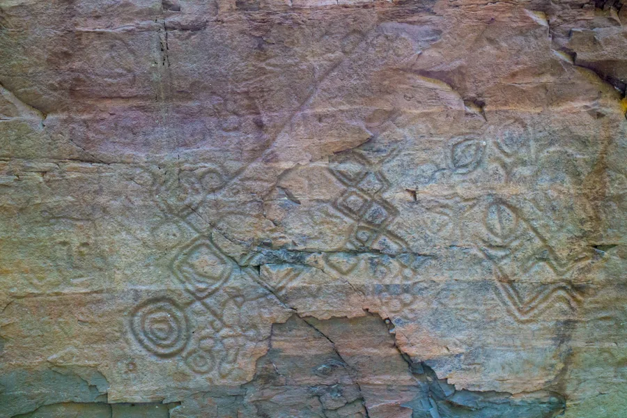
▲ 천전리 암각화 윗부분의 마름모·동심원 무늬 사진=Wikimedia Commons (Amlou2518, CC BY-SA 4.0)
3. 가는 법과 주차 — 반구대암각화 공영주차장이 출발점
자가용이라면 경부고속도로 서울산IC에서 나와 35번 국도를 타고 경주 방면으로 가다 '반구대암각화 진입로'로 들어서는 것이 울산암각화박물관이 안내하는 기본 경로다. 울산·밀양 쪽에서는 24번 국도를 타고 경주 방향으로 가다 35번 국도로 갈아타고, 경주 쪽에서 내려온다면 35번 국도를 따라 언양 방향으로 오다 같은 진입로로 들어가면 된다. 진입로부터는 대곡천을 따라 들어가는 좁은 마을길이다.
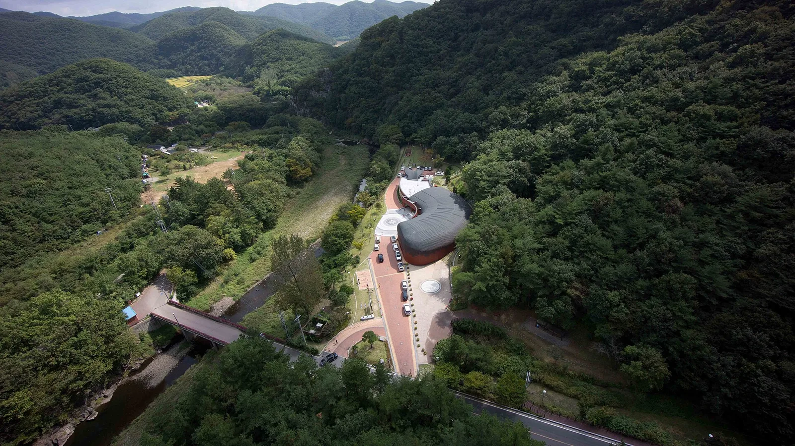
▲ 계곡 안쪽에 자리한 울산암각화박물관 일대를 위에서 내려다본 모습. 진입로는 산과 개울 사이로 난 좁은 길이다 사진=Wikimedia Commons (Ulsan Petroglyph Museum, CC BY-SA 3.0)
차는 반구대암각화 공영주차장에 세우는 것이 기본이다. 순환버스도 이곳 탑승장(쉘터)에서 출발한다. 울산암각화박물관은 박물관 안에는 대형버스를 세울 수 없으니 승객을 내려준 뒤 큰길 방향으로 약 1.3km 떨어진 공영주차장을 이용해 달라고 안내한다. 울산시와 울주군은 등재 뒤 외곽에 공영주차장을 새로 만들고 진입로를 정비했으며, 순환버스를 도입하면서 "주차난과 교통 혼잡을 덜기 위한 것"이라고 밝혔다. 가을 주말에는 늦게 도착할수록 박물관 쪽으로 차를 몰고 들어가기보다 공영주차장에 먼저 세우는 편이 낫다. 주차 요금과 주차 면수는 박물관·울산문화관광재단 공식 안내에서 확인되지 않아 방문 전 박물관(052-229-4797)에 문의하는 것이 좋다.
| 항목 | 내용 |
|---|---|
| 운행 개시 | 2026년 4월 24일 |
| 운행일 | 매주 수요일~일요일(주 5일) |
| 운행 시간 | 하루 8회, 반구대암각화 주차장 출발 09:50·10:50·12:50·13:50·14:50·15:50·16:50·17:50 (11시 50분 회차 없음), 1회 약 50분 |
| 요금 | 무료, 예약 없이 탑승 |
| 탑승 장소 | 반구대암각화 주차장 순환버스 탑승장(쉘터) |
| 노선 | 주차장 → 암각화박물관 → 공중화장실 → 암각화박물관 → 주차장 → 반구대입구 버스정류소 → 구량천전 버스정류소 → 울산대곡박물관 → 천전리명문과암각화입구 → 울산대곡박물관 → 구량천전 → 주차장 (자유 승하차) |
| 주요 시각(1회차 기준) | 주차장 09:50 → 박물관 09:55 → 주차장 10:10 → 울산대곡박물관 10:22 → 천전리 입구 10:25 → 주차장 10:40 |
| 막차 | 주차장 17:50 출발 → 박물관 17:55·18:05, 천전리 입구 18:25 → 주차장 18:40 도착 |
| 차량 | 15인승 1대 |
| 문의 | 052-255-1822(울산문화관광재단) |
순환버스는 15인승 1대라 가을 주말에는 한 번에 다 타지 못할 수 있고, 월·화요일에는 운행하지 않는다. 화요일은 박물관은 문을 열지만 버스가 없는 날이라 걷거나 차로 움직여야 한다. 한 바퀴 안에 박물관 구간과 천전리 구간을 차례로 돌기 때문에, 박물관에서 천전리로 가려면 주차장을 한 번 거쳐 가게 된다. 점심시간대인 11시 50분 회차가 비는 점도 기억해 두자. 대중교통으로는 박물관이 383번(지원 1) 버스를 안내한다. 울산역 출발 기준 10:55·13:35·18:25 하루 3회뿐이라 시간표를 미리 확인해야 한다.
4. 둘러보는 동선 — 박물관에서 반구대까지 1.2km, 관람 지점은 80m 앞
반구대 암각화는 바위 바로 앞까지 갈 수 없다. 암각화가 개울 건너편 절벽에 있고, 세계유산 보존을 위해 약 80m 떨어진 관람 지점에서 봐야 한다. 대한민국 구석구석에 따르면 박물관에서 암각화까지는 약 1.2km다. 순환버스는 박물관 너머 '공중화장실' 정류소까지 들어가지만, 그 뒤로도 관람 지점까지는 탐방로를 걸어야 한다. 길은 평탄해 남녀노소 걷기에 무리가 없고, 마을 입구 쪽 약 500m 구간은 대숲과 습지를 지나 풍경이 좋다. 탐방로 곳곳에서는 약 1억 년 전 백악기 공룡 발자국 화석도 볼 수 있다.
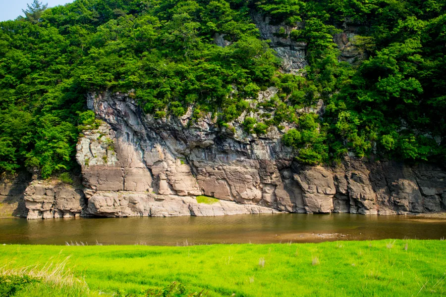
▲ 대곡천 건너편의 반구대 암각화 절벽. 관람객은 개울 이쪽 편에서 바위를 바라보게 된다 사진=Wikimedia Commons (Amlou2518, CC BY-SA 4.0)
80m 거리에서는 맨눈으로 그림을 알아보기가 쉽지 않다. 그래서 울주군은 올해 7월, 부산에서 열린 제48차 세계유산위원회를 앞두고 반구대 암각화 관람 지점에 AI 기반 XR(확장현실) 지능형 망원경 4대를 설치했다. 망원경으로 바위를 보면 고래 등 암각화 문양이 빛을 내며 도드라지게 구현되고, AI 보정으로 날씨가 궂어도 비교적 또렷한 화면을 보여주며, 한국어·영어·일본어·중국어 해설을 지원한다. 울주군은 10월까지 임시로 운영하며 콘텐츠를 수정·보완한 뒤 11월부터 본격 운영할 계획이라, 10월 방문이라면 운영 여부와 콘텐츠가 달라질 수 있다. 울산시는 스마트폰으로 QR코드를 찍어 해설을 듣는 안내 체계도 갖췄다고 밝혔다.
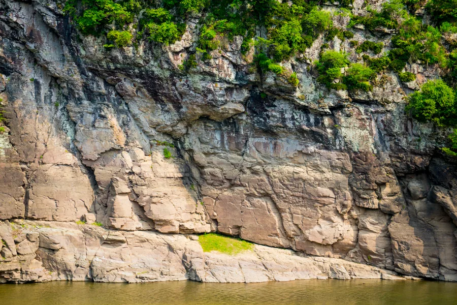
▲ 반구대 암각화 절벽 아랫부분을 망원으로 당겨 본 모습. 그림은 이 바위면에 얕게 쪼아 새겨져 있어 먼 거리에서는 알아보기 어렵다 사진=Wikimedia Commons (Amlou2518, CC BY-SA 4.0)
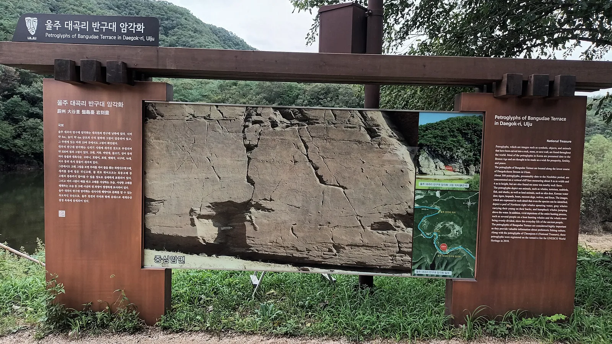
▲ 반구대 암각화 관람 지점에 세워진 안내판. 멀리 보이는 바위면과 안내판 속 그림을 번갈아 보며 위치를 짚어볼 수 있다 사진=Wikimedia Commons (Dittwjfsdgkvkdjg, CC BY-SA 3.0)
추천 순서는 이렇다. ① 공영주차장에 차를 세우고 ② 순환버스나 도보로 울산암각화박물관에 먼저 들러 실물 크기 모형으로 그림의 위치를 익힌 뒤 ③ 탐방로를 걸어 관람 지점으로 가서 망원경과 안내판으로 실물을 확인하고 ④ 다시 순환버스(주차장 경유)로 울산대곡박물관, 천전리 명문과 암각화까지 돌아보는 것이다. 박물관에서 미리 보고 가면 80m 너머의 흐릿한 바위면에서도 고래와 배를 훨씬 쉽게 찾을 수 있다.
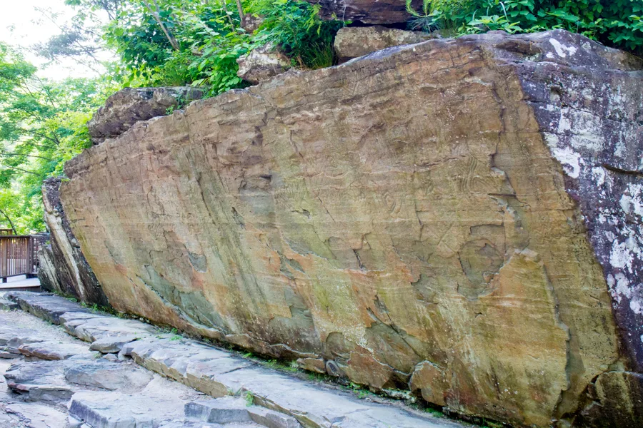
▲ 천전리 명문과 암각화. 비스듬히 기운 바위면 앞으로 관람 데크가 놓여 있다 사진=Wikimedia Commons (Amlou2518, CC BY-SA 4.0)
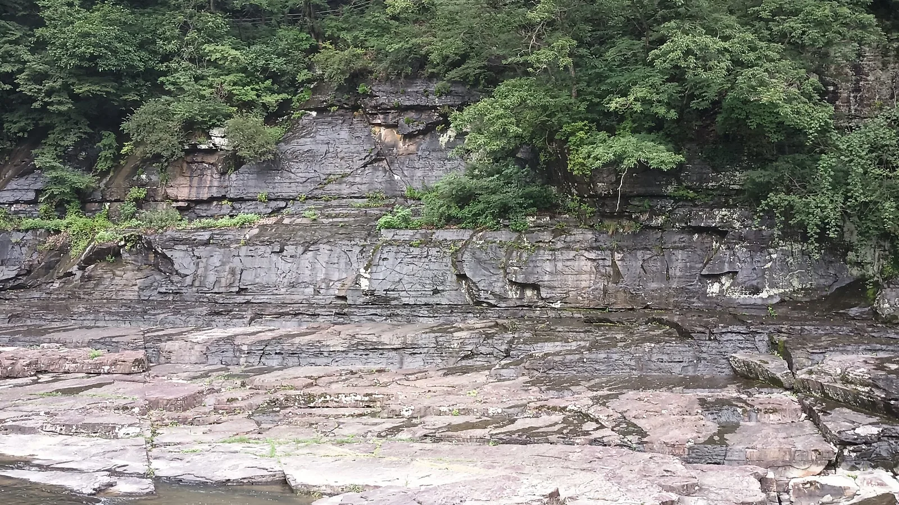
▲ 천전리 공룡 발자국 화석 일대의 퇴적암 지층. 반구천 주변 바위에서는 백악기 공룡 발자국이 곳곳에서 발견된다 사진=Wikimedia Commons (Dittwjfsdgkvkdjg, CC BY-SA 3.0)
5. 울산암각화박물관 — 실물 크기 모형으로 먼저 '예습'
2008년 5월 30일 문을 연 울산암각화박물관은 반구대·천전리 두 암각화를 소개하는 전문 박물관이다. 주소는 울산 울주군 두동면 반구대안길 254. 관람 시간은 오전 9시부터 오후 6시까지이며 입장은 오후 5시 30분에 마감한다. 매주 월요일과 1월 1일은 쉬고, 관람료는 무료다. 월요일이 공휴일일 때의 휴관 여부는 박물관 홈페이지 공지로 확인하자.
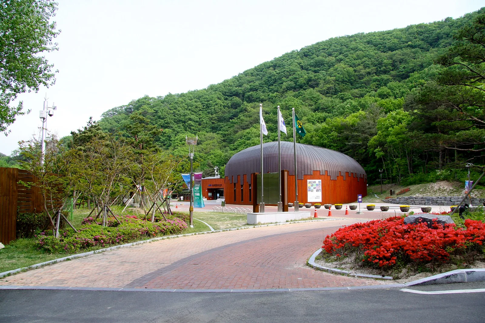
▲ 울산암각화박물관 외관 사진=Wikimedia Commons (Ulsan Petroglyph Museum, CC BY-SA 3.0)
전시실의 핵심은 두 암각화를 본뜬 실물 크기 모형이다. 조명을 받은 모형 앞에 서면 현장에서는 80m 밖에서 봐야 하는 그림을 눈앞에서 하나씩 짚어볼 수 있다. 가을에는 반구천을 걷는 웰니스 프로그램, 가족 만들기 체험, 반구천 해설 탐방 같은 프로그램도 운영하니 홈페이지에서 일정과 예약 방법을 확인하자.
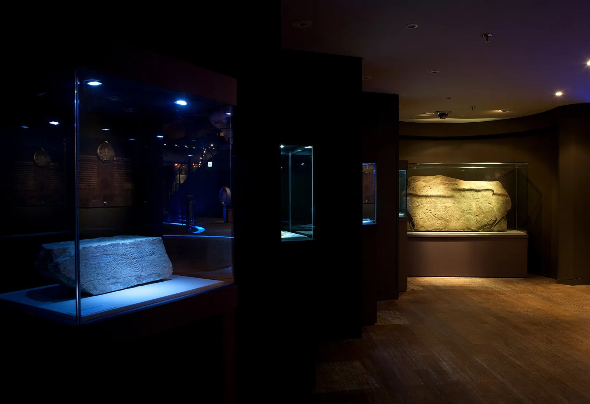
▲ 울산암각화박물관 전시실. 유리 진열장 안에 동심원 무늬가 새겨진 바위 등 암각화 자료가 놓여 있다 사진=Wikimedia Commons (Ulsan Petroglyph Museum, CC BY-SA 3.0)
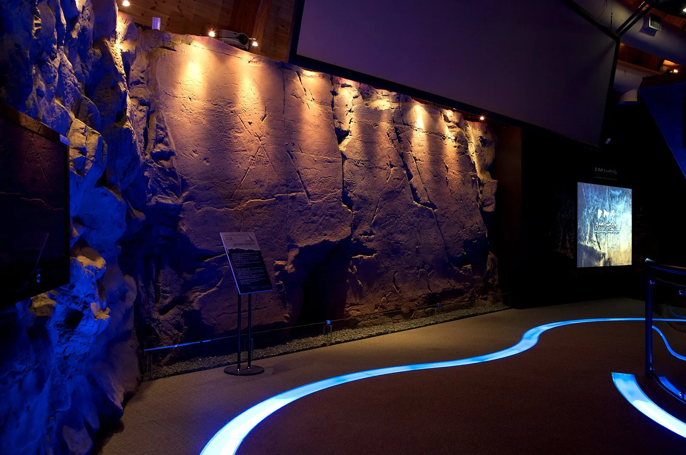
▲ 울산암각화박물관 전시실의 반구대 암각화 실물 크기 모형 사진=Wikimedia Commons (Ulsan Petroglyph Museum, CC BY-SA 3.0)
6. 해마다 물에 잠기는 암각화, 사연댐 수문은 언제
반구대 암각화의 가장 큰 숙제는 물이다. 1965년 하류에 사연댐이 들어섰는데, 댐 만수위는 해발 60m이고 암각화는 해발 53~57m에 있다. 댐 수위가 53m를 넘으면 잠기기 시작해 57m를 넘으면 완전히 물속에 든다. 2014년부터 취수탑으로 수위를 낮추면서 연평균 침수 일수는 151일에서 39일로 줄었지만, 여전히 해마다 한 달 넘게 물에 잠긴다. 세계유산 등재 일주일 만인 지난해에도 7월 19일부터 8월 24일까지 37일간 잠겼다. 해마다 편차도 커서 2021년 18일, 2022년 23일, 2023년 68일간 중심 암면이 물에 잠겼다.
| 항목 | 내용 |
|---|---|
| 사연댐 | 1965년 준공, 만수위 해발 60m, 울산시민 약 40%의 식수원 |
| 암각화 높이 | 해발 53~57m (53m 넘으면 침수 시작) |
| 연평균 침수 | 2014년 이전 151일 → 이후 약 38~39일 |
| 2025년 침수 | 7월 19일~8월 24일, 37일 |
| 대책 | 여수로를 약 17m 낮춰 폭 15m·높이 7.3m 수문 3개 설치, 취수시설 신설, 총사업비 809억 원(환경부·한국수자원공사) |
| 일정 | 2026년 하반기 착공 계획 → 2030년 완공 목표 |
| 기대 효과 | 평상시 댐 수위를 암각화보다 낮은 해발 48m 이하로 유지, 큰비 때는 수문을 열어 수위 조절 → 연평균 침수 1일 이하 |
허민 국가유산청장은 올해 7월 "사연댐 수문 설치 공사를 올해 하반기 시작해 2030년까지 마무리하겠다"며 "수문이 완공된 뒤에도 기후변화 속에서 제 역할을 할 수 있을지까지 고민해야 한다"고 말했다. 수문이 생기면 저수 용량이 2,500만㎥에서 1,200만㎥로 줄어 울산의 생활용수가 하루 4만 9,000t 줄어드는 만큼, 정부는 대체 수원 확보 방안도 함께 찾고 있다. 실제 착공 여부와 공사 진척은 아직 공식 발표로 확인되지 않았으니, 공사가 시작되면 진입로나 주변 통행에 영향이 있을지 방문 전 확인하는 편이 좋다. 방문객 입장에서 기억할 것은 하나다. 큰비나 태풍이 지나간 뒤에는 암각화가 물에 잠겨 있을 수 있다. 가을이라도 비가 많이 온 직후라면 박물관에 먼저 전화해 상황을 확인하자.
7. 가을에 가면 좋은 이유와 방문 팁
대곡천 계곡은 가을이면 절벽 위 숲이 붉고 누렇게 물든다. 암각화 절벽과 단풍을 한 장면에 담을 수 있는 시기가 이때다. 대한민국 구석구석은 해가 바위면을 비추는 맑은 날 오후 3~5시를 관람하기 좋은 시간으로 꼽는다. 그림의 굴곡에 그림자가 생겨 새긴 선이 도드라지기 때문이다. 박물관 입장 마감(오후 5시 30분)과 순환버스 막차(주차장 17:50 출발)를 고려하면, 오후 1~2시쯤 도착해 박물관을 먼저 보고 3시 무렵 관람 지점으로 향하는 일정이 알맞다. 천전리 암각화까지 햇빛 좋은 때 보고 싶다면 오전 10시 무렵 천전리부터 보고 오후에 반구대로 옮기는 것도 방법이다.
- 요일 선택: 월요일은 박물관 휴관, 월·화요일은 순환버스 미운행. 수~금요일 평일이 가장 여유롭다.
- 주차: 주말엔 오전 일찍 공영주차장에 세우고 순환버스를 이용. 좁은 마을길로 차를 끌고 깊이 들어가지 말 것.
- 준비물: 순환버스를 타도 관람 지점까지는 탐방로를 걸어야 하니 편한 신발, 망원경이 붐빌 때를 대비해 쌍안경이 있으면 좋다.
- 날씨: 비 온 직후엔 침수 여부, 흐린 날엔 XR 망원경 운영 여부를 확인.
8. 주변 연계 코스 — 언양 불고기, 태화강 국가정원
반구천 암각화는 행정구역상 울주군 언양읍·두동면에 걸쳐 있어 언양읍내와 가깝다. 언양은 얇게 썬 한우를 양념해 석쇠에 올려 숯불에 굽는 '언양 불고기'로 이름난 곳이다. 1960년대 경부고속도로 공사 때 모여든 인부들이 즐겨 먹으면서 알려졌다는 이야기가 전해지고, 지금도 언양읍내에 불고기 식당이 모여 있다. 암각화를 오후에 보고 해 질 녘 언양으로 나와 저녁을 먹는 동선이 자연스럽다.
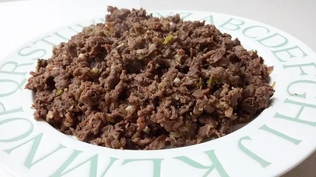
▲ 언양식 바싹불고기 사진=Wikimedia Commons (행복한 초록개구리, CC BY 4.0)
하루를 더 쓸 수 있다면 울산 도심의 태화강 국가정원을 묶자. 십리대숲과 대나무광장, 생태습지, 사계절 초화단지가 태화강을 따라 이어지고, 가을엔 강변 억새도 볼 만하다. 국가정원 일대에는 공영·민영 주차장 14곳(2,281면)이 있는데, 대부분 유료이고 태화강전망대(28면)·삼호둔치(175면)·동굴피아(55면) 주차장은 무료다. 유료 주차장은 사람이 받거나 스마트폰 또는 카드 전용 무인정산기로 계산한다.
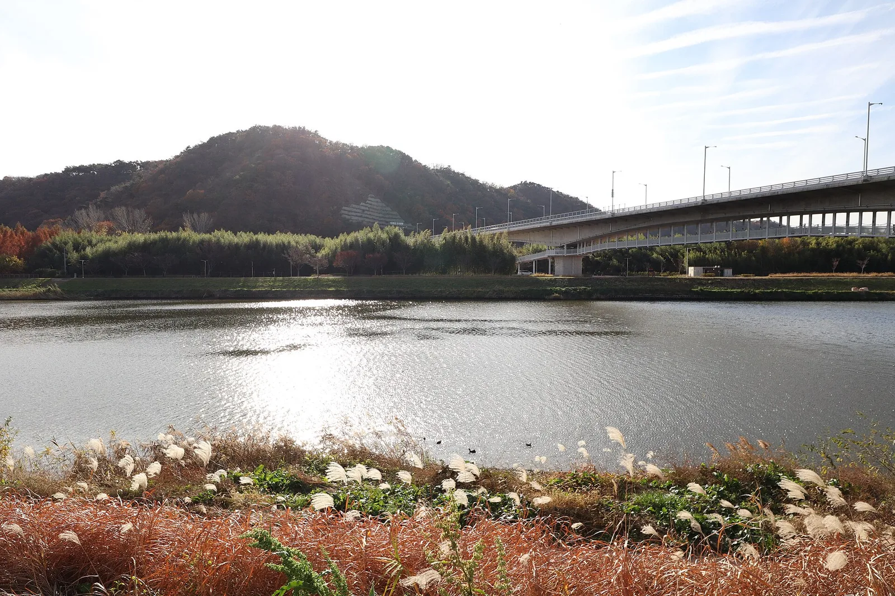
▲ 늦가을 태화강 국가정원 강변. 억새 너머로 태화강과 다리가 보인다 사진=Wikimedia Commons (Mobius6, CC BY-SA 4.0)
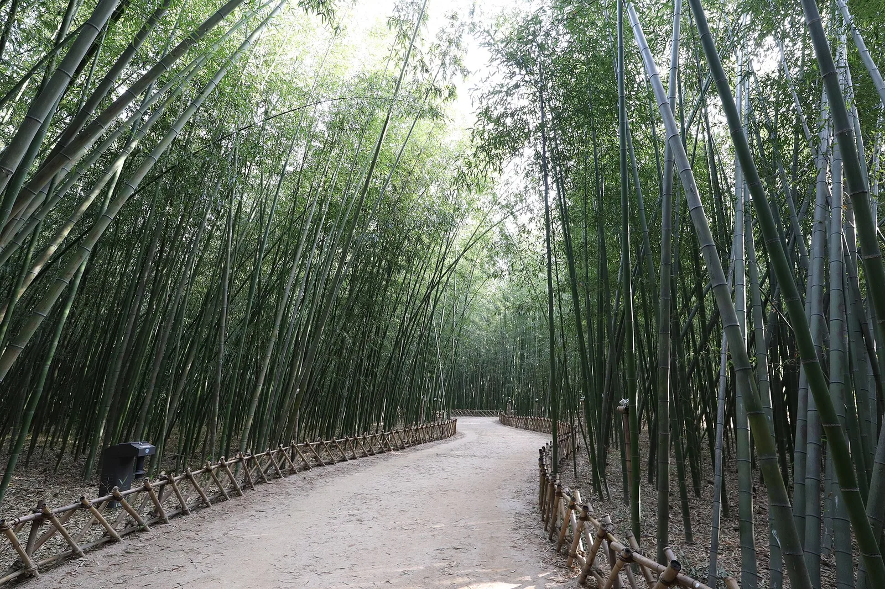
▲ 태화강 국가정원 십리대숲 산책로 사진=Wikimedia Commons (Mobius6, CC BY-SA 4.0)
바다까지 이어 가고 싶다면 울산 동구 대왕암공원에서 경주 문무대왕릉으로 이어지는 해안길을 다룬 경주~울산 31번 국도 가을 해안 드라이브를, 10월 중순 이후라면 울산 신불산 등 억새 명소를 묶은 가을 억새 드라이브 코스를 함께 참고하면 좋다. 선사시대 고래 그림을 보고 실제 동해를 달리는 하루가 된다.
📍 확인이 필요한 정보
반구대암각화 공영주차장의 주차 요금·면수는 공식 자료에서 확인되지 않았다. 순환버스 시간표는 울산문화관광재단 안내(2026년 기준)를 따랐으며 바뀔 수 있다. XR 망원경은 11월 본격 운영 예정이라 10월 방문 시 운영 여부가 다를 수 있다. 방문 전 울산암각화박물관(052-229-4797) 또는 울산문화관광재단(052-255-1822)에 확인하자.
9. 한눈에 보는 하루 코스
| 시간 | 코스 | 메모 |
|---|---|---|
| 오전 | 태화강 국가정원 십리대숲 산책 | 무료 주차장(삼호둔치 등) 활용 |
| 점심 | 언양읍내 불고기 | 석쇠 숯불구이 |
| 오후 1~2시 | 반구대암각화 공영주차장 → 순환버스 → 울산암각화박물관 | 모형으로 그림 위치 예습 |
| 오후 3~5시 | 반구대 입구 → 탐방로 → 관람 지점(망원경) | 해가 바위를 비추는 시간 |
| 막차 전 | 순환버스로 천전리 명문과 암각화 → 주차장 복귀 | 막차 주차장 17:50 출발·18:40 복귀 |
✅ 출발 전 확인할 것
· 요일: 월요일 박물관 휴관, 월·화요일 순환버스 미운행
· 날씨: 큰비·태풍 뒤에는 암각화 침수 여부를 박물관에 전화로 확인
· 주차: 반구대암각화 공영주차장에 세우고 순환버스 이용, 요금은 현장 확인
· 망원경: XR 망원경 운영 여부(11월 본격 운영 예정)
· 시간: 맑은 날 오후 3~5시 관람 추천, 박물관 입장 17:30 마감
· 신발: 탐방로 걷기 대비 편한 신발